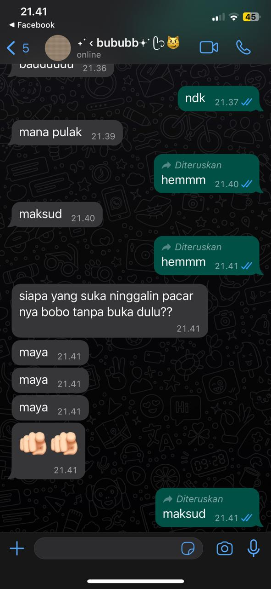

Selamat datang di halaman informasi resmi Defa Abimanyu! Disini Kamu akan menemukan segala informasi Defa Abimanyu, mulai dari kelucuannya saat pacaran sama aku, sweetnya dia, dan sepenggal keluh kesah ku, ga banyak si, aku gamau isi banyak-banyak karena takut Kamu bosen bacanya. Awas aja klo dikasi ketemen mu itu, gamau aku, tapi pasti nanti km bakal gibahin aku sama temenmu itu
Defa Abimanyu lahir pada 01 Februari 2005, yang lebih dikenal dengan fay adalah mantanku yang paling ku sayang, first experienceku di dia semua emang si aku gabisa ketemu dia, tapi aku merasa beruntung karena pernah di treat sebaik dia, dia itu defenisi cowo yang sempurna banget, dia itu engga ada kurang nya sama sekali. kadang aku inseksyor sama dia karena dia sabar banget menghadapi aku yang sangat ambekan ini.
Aku kadang mikir, kok bisa kamu mau sama kamu dulu, tapi sekarang kamu dah bosen sama aku heheheh, tapi gapapa, aku ngerti kok, kamu bosen itu gara-gara gabisa ketemu. aku tau km pasti pengen yang isa ketemu, tapi sayangnya aku nya terlalu jauh untuk bisa ketemu, andaikan aku dah gede dan punya banyak uang pasti aku mau nyampering, tapi sayang banget klo aku masi bocil lum kerja, ga punya duit buat nyamperin kamu.
Klo kita ketemu terus kemungkinan juga km bakal bosen, tapi gatau ah. Aku kangen banget sama suara km, tapi sekarang uda gabisa dengerin lagi, sama km nya juga kangen banget btw aku beneran udah gaada kesempatan lagi sama km yaa? Aku pengen km lagi plis, balik lagi ayo. hidup aku tanpa km itu benran hampa banget, gaada warnanya. tapi aku liat km tanpa aku tu baik-baik aja, fine-fine aja, mungkin aja km uda nemu yang lebih baik dari aku disana hehehehe. Klo bisa nanti aku pengen kamu balik pas tanggal 27 Mei ini.
Btw ini ada sepenggal ss an chat pas aku lagi sakit, km bawel banget tapi aku suka.
Ini ss an call nya, aku suka nbe ss klo kita call an
Ini ss an cht km yang gamau asing
Ini ss an km pas ngasi aku long text, INI LUCUU BANGETT PLISS
Ini ss an random, karena lucuu aja gitu
Ini ss apa ya lupa, tapi ini lucu banget fliss
Udah ah segini aja dulu, aku udah gaiso berfikir lagi, udah bingung, jangan lupa balikan nya ya banh. Ku tunggu nanti, sampaii jumpaaaa sayanggg.